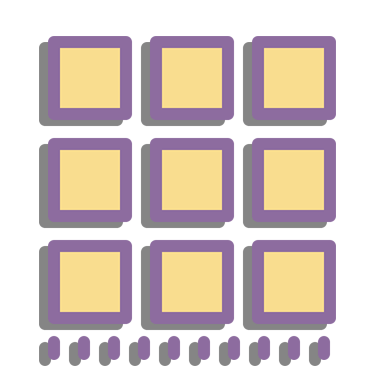

<mat-drawer-container class="example-container" autosize>
    <mat-drawer  #drawer class="example-sidenav navbar menucompleto" mode="over">
        <ul class="menu" id="menu">
            
            <li class="nav-el">
                <a [routerLink]="['/','worker','bookingManager']" data-bs-toggle="collapse" class="nav-link text-truncate">
                    <span class="textomenu">Lista de Reservas</span>
                </a>
            </li>
            <li class="nav-el">
                <a (click)="logout($event)" [routerLink]="['/auth']" class="nav-link text-truncate">
                    <span class="textomenu">Cerrar Sesion</span>
                </a>
            </li>
        </ul>
    </mat-drawer>

    <div class="example-sidenav-content">
        <button class="botonmenulineas" type="button" mat-button (click)="drawer.toggle()">
            
        </button>
        <router-outlet></router-outlet>
    </div>

</mat-drawer-container>


<div class="offcanvas offcanvas-start w-25" tabindex="-1" id="offcanvas" data-bs-keyboard="false" data-bs-backdrop="false">
    <div class="offcanvas-header">
        <h3 class="offcanvas-title d-none d-sm-block" id="offcanvas">navegacion</h3>
        <button type="button" class="btn-close text-reset" data-bs-dismiss="offcanvas" aria-label="Close"></button>
    </div>
    <div class="offcanvas-body px-0">
        <ul class="nav nav-pills flex-column mb-sm-auto mb-0 align-items-start">

        </ul>
    </div>
</div>
    <!-- toggler -->
    <button class="btn float-start" data-bs-toggle="offcanvas" data-bs-target="#offcanvas" role="button">
        <button class="btn float-end" data-bs-toggle="offcanvas" data-bs-target="#offcanvas" role="button">
            <mat-icon>menu</mat-icon>
        </button>
    </button>
<main class="container mw-100">
    <router-outlet></router-outlet>
</main>


